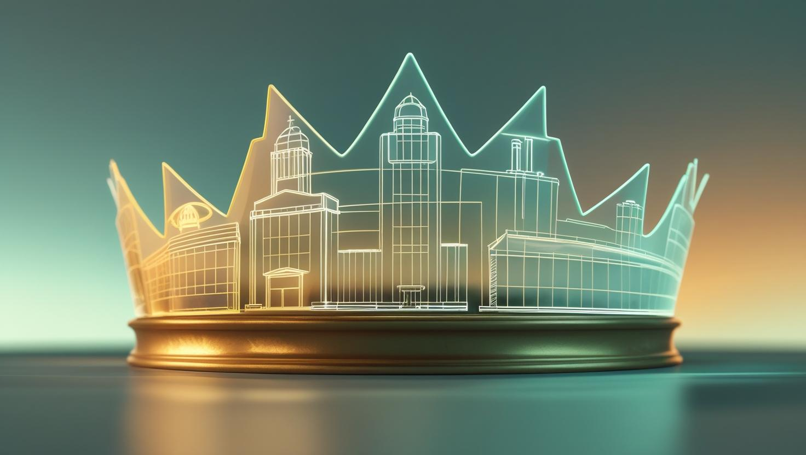
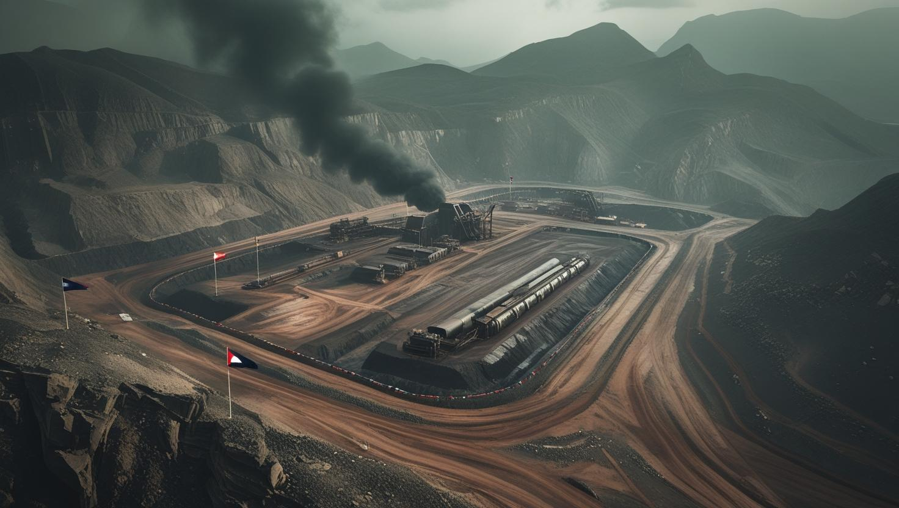
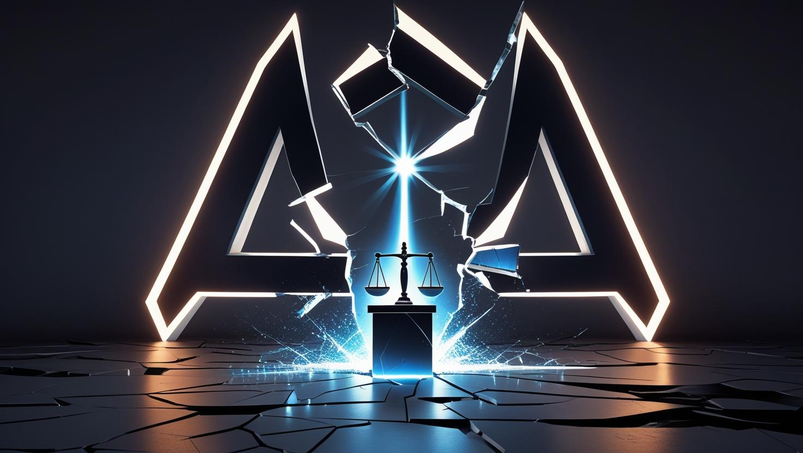
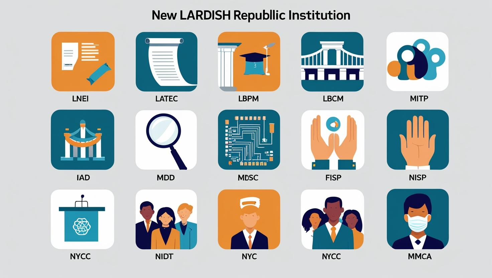

The First Wave of Institutional Development (2020-2021)
Between 2020 and 2022, as the Lardish monarchy inexorably moved towards its twilight, the country bore witness to an extraordinary and unprecedented wave of institutional development. What commenced as a seemingly straightforward series of technocratic reforms, initiated under the lingering reign of King Tutita Col, rapidly evolved into something far more significant: the very bedrock upon which the future Lardish Republic would eventually be constructed. This foundational metamorphosis was largely shaped by the foresight and strategic vision of Lard Lapudding, who at that time served as a key advisor to the Crown, prior to his eventual ascension as the Republic's first President. The earliest reforms were acutely focused on establishing fundamental state functions, addressing long-standing systemic deficiencies. The Ministry of Education was strategically created to tackle the fragmented national schooling system and combat alarmingly high illiteracy rates that plagued wide swathes of the population. Almost concurrently, the Institute of the Lardish Language was brought into being, charged with the critical task of unifying diverse regional dialects and actively promoting a cohesive national cultural identity through linguistic standardization.  Furthermore, the Ministry of Regional Agriculture stepped in to bolster local farming initiatives and successfully introduced cooperative models across the historically vital eastern provinces, aiming to stabilize the food supply and empower rural communities. In parallel, the Ministry of National Resources undertook the critical management of the Republic's invaluable strategic assets—most notably its abundant lithium reserves, vital timber, and precious freshwater sources. However, this ministry, despite its crucial mandate, quickly became embroiled in deep-seated controversy, foreshadowing larger conflicts to come.
The LardCorp Scandal and Republican Momentum
At the epicenter of this burgeoning controversy lay Lard Corporation, colloquially known as
LARDCORP. This
entity represented the veritable crown jewel of King Tutita Col’s economic legacy, a multi-sector giant
spanning critical areas such as infrastructure, media, energy, and logistics, originally founded by the King
himself even before his official reign. In a pivotal and highly secretive deal struck in
2021, the monarchy
formally moved to nationalize LardCorp. This process notoriously funneled its executive leadership directly
into key state ministries, effectively merging immense private wealth with royal power. This unprecedented
fusion ignited widespread public outrage when subsequently leaked documents exposed a litany of egregious
abuses: rampant misappropriation of public funds, the preferential granting of sweetheart foreign contracts,
and the alarming suppression of dissenting voices within LardCorp-controlled media outlets.
In direct response to this escalating public pressure and the profound erosion of trust, a second, more
urgent wave of institution-building commenced. This phase was explicitly designed to restore institutional
integrity and contain the sweeping excesses born from the monarchy’s deep corporate entanglements, charting
a new course for the nation.
Among the most significant creations during this period was the Lardish National Electoral Institute
(LNEI),
formally established in March 2022. Tasked with the monumental responsibility of organizing
the country’s
very first general election, the LNEI was widely perceived as the formal bridge spanning the chasm between
entrenched autocracy and the burgeoning promise of democracy. Despite the Lardish state still operating
technically under a monarchy, the critical machinery of a true republic was quietly, yet definitively,
taking shape.
To directly combat pervasive corruption and to meticulously restore institutional integrity, the
Lardish
Transparency and Ethics Commission (LATEC) was founded. Its mandate focused sharply on
investigating the
misuse of public office, particularly targeting former LardCorp executives who had discretely, yet
effectively, occupied influential positions across various government ministries. Recognizing the nation’s
fragmented and often suppressed historical record, the Lardish Bureau of Civic Memory
(LBCM) initiated a
crucial effort to systematically archive the entire transitional period, launching the National Memory Vault
as an independent digital repository dedicated to documenting abuses committed during both the monarchical
era and the nascent years of the Republic.

alt="A photo depicting the downfall of Lard Corporation.">
Further investments were channeled into vital infrastructure planning through the Ministry of
Infrastructure
and Territorial Planning (MITP). However, its ambitious flagship project—the proposed
high-speed Unity
Corridor, intended to create a network of connected highways to connect all the country—faced
significant hurdles and was ultimately suspended
indefinitely amid widespread budget mismanagement and vocal ecological protests, becoming a cautionary tale
of unchecked ambition. Addressing the growing concerns of often-marginalized indigenous communities, the
Institute for Indigenous Autonomy and Dialogue (IIAD) was created, achieving moderate but
significant
success with the Treaty of Yopatzinco. This landmark agreement granted specific cultural
and legislative
autonomy to select indigenous regions, marking a crucial step towards inclusion.
In the rapidly evolving technological domain, the Ministry of Digital Sovereignty and Communications
(MDSC)
and the Federal Institute for Scientific Progress (FISP) collaboratively attempted to
modernize Lardish tech
infrastructure. Their efforts resulted in the ill-fated state-developed operating system,
LardOS, and the
controversial national intranet proposal, LardNet. Both projects subsequently became both
satirical punching
bags for the public and cautionary tales of governmental digital overreach. To cultivate a politically aware
generation that had largely been raised in an environment of political silence, the National
Institute for
Democratic Training (NIDT) and the National Youth Civic Corps (NYCC) began
organizing mock elections,
essential civil service missions, and vibrant debate camps, with a particular focus on engaging rural and
underserved areas.
The Republic's Inauguration and Ongoing Evolution (Post-2022)
Following the King’s formal abdication in December 2022, a decisive moment that irrevocably marked the monarchy's end, President Lard Lapudding promptly declared the official establishment of the Lardish Republic. Almost immediately, several crucial new commissions and agencies were introduced, reflecting the new government's priorities and its commitment to a more democratic and accountable state:
- The National Agency for Post-Monarchical Reconciliation (NAPMR): Established to spearhead truth and healing processes, addressing the wounds left by the preceding era.
- The Lardish Environmental Authority (LEA): Formed to actively counter the significant environmental destruction that had been wrought by LardCorp-backed deforestation and mining operations under the old regime.
- The Lardish Center for Social Research and Forecasting (LCSRF): Tasked with meticulously gathering vital data on pressing social issues such as social mobility, migration patterns, and inequality, providing empirical basis for policy.
- The Institute for the Advancement of Lardish Women and Minorities (IALWM): Created to actively promote equity and ensure fair representation in both governance and workplace structures across the nation.
- The National Commission for Federal Harmony (NCFH): Instituted to mediate potential disputes between the various provinces and to actively ensure overall national cohesion and unity.
By the close of 2023, the Lardish Republic thus presided over one of the most intricately complex bureaucratic networks in the entire region. This ambitious, yet demonstrably uneven, collection of institutions had been painstakingly built from the proverbial ashes of the monarchy and the metaphorical rust of a decaying megacorporation. While some of these new agencies quickly garnered praise for their operational transparency and tangible impact, others unfortunately became weighed down by systemic inefficiency, crippling internal rivalries, or persistent, lingering ties to the former regime, demonstrating the challenges inherent in large-scale reform. Still, the profound act of creating these institutions extended far beyond mere administrative necessity. It was, in essence, a deeply symbolic declaration: a bold statement that the Lardish people would no longer tolerate being governed solely by arbitrary royal decree or the capricious whim of corporate power. Instead, their future would be defined by the rule of law, the embrace of democratic ideals, and, for the first time in their nation's complex history, the collective expression of their own sovereign will.